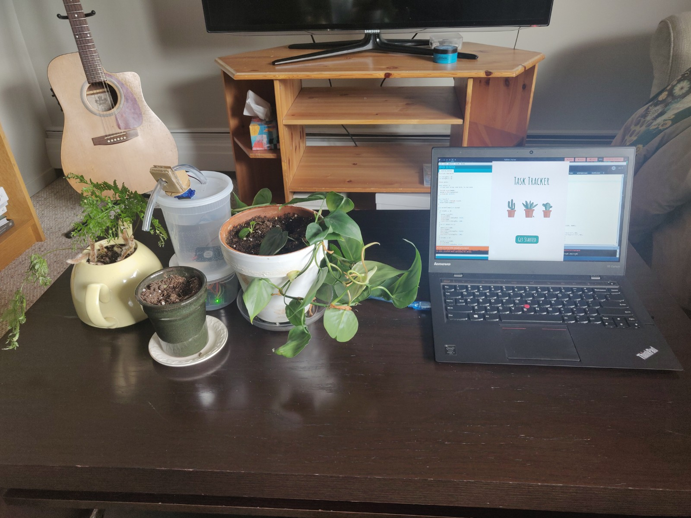

For this assignment, we were tasked to take personal data and represent it using physical visualization.
We initially had issues with understanding what personal data was and our only understanding of data
visualization has been in the digital medium where manipulability, responsiveness and setup were more
familiar and cost effective. Our understanding of the benefits to data visualization was education through
touch and scale, usually through static grand displays or machine-independent interactions. Since our
project needed to be dynamic our other issue was communicating with Arduino in real time. We thought that
if the Arduino were to take in a data set (array/CSV), it would be no different than hard coding behaviors.
So we played around with a couple ideas more akin to traditional visualizations. We knew we wanted to work
with water in some way so the first thought was a bar graph that filled and decreased based on your budget.
The difficulty with water came with sealing the tubes and working against gravity. There were options for
smaller, 5V pumps but we found that even though the Arduino could power it, it wasn't powerful enough for
our needs. We then decided on a due date app that had cups of water with lights in them that changed due
to the closeness of a due date. The lights would be covered with a "fire" display and they would be put out
by our pump that was attached to a servo motor. We found that wiring it would be an issue and that the water
would not play a role other than giving a fun visualization. We then decided on the Habit-at Tracker.
Our inspiration was a little lacking since physicalization is a little less common due to its difficulty
and cost. We were inspired to use water from Charles Sowers, Tidal Memory display where he has multiple
tubes of water and light to display a dynamic scale. We tried implementing this with a two tubes but ended
ditching the idea due to fabrication issues and inability to polish the final product.
Charles Sowers
After receiving permission to do the plant based visualization we were also given a paper that did exactly
what we wanted to do. The implementations were very similar and inspired but the key take away from the
paper was the understanding of the limitations of physicalizations and the motivation from that to use
plants as a dynamic, motivating medium.
Go and Grow
The structure of the machine was very similar to the due date machine. The machine consist of an Arduino Uno, a relay, 12V pump, a micro servo, an external 12V power supply and a Processing App to communicate to the Serial Port in the Arduino IDE to send instructions to the micro controller. We liked this idea more since the water actually played a crucial role. If you didn't follow through with your habits, you would see the change in the health of you plants. We found that this was a powerful visualization and a different interpretation that couldn't be found in the digital medium. Different plants could also represent different habits too. Say you have a more resilient plant like a cactus, that could represent less crucial habits like practicing programming (once a week) or stretching. Then you could have more delicate flowers like lilies, daisies, roses that would have a faster and more dramatic change to them if habits were not followed (no watering). There is further interaction to this other than the digital and the machine which we really liked. There was definitely a big learning curve, from understanding circuit diagrams, wiring, relays, voltage capacity and especially communication to the Arduino using Processing.